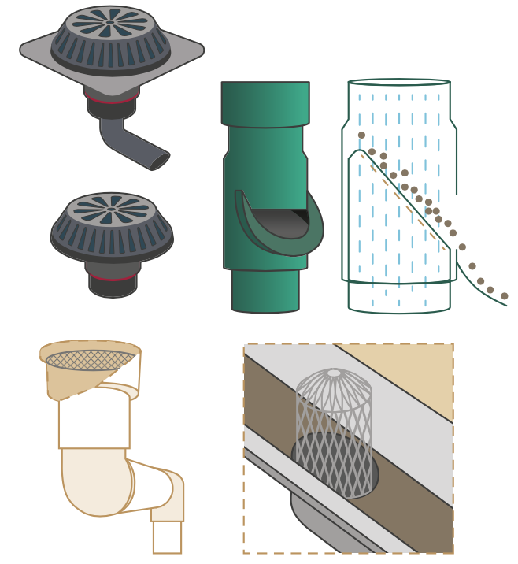
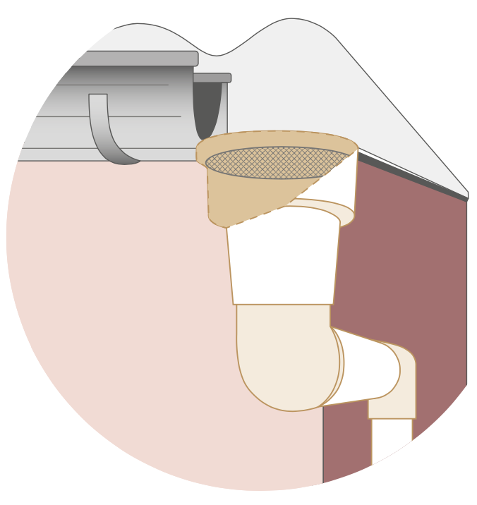

¿Cómo hacer un sistema de captación de agua de lluvia (SCALL) en mi escuela?
Contents
4. ¿Cómo dimensionar y construir un SCALL?
4.2. ¿En qué consiste el sistema de recolec- ción y conducción de agua?
4.2.3. ¿Qué materiales y herramientas se necesitan para la instalación?
Herramientas sugeridas
|
Materiales:

|
|---|
4.2.4. ¿Cómo instalar el sistema de canaletas y tuberías de conducción del agua?
Las canaletas se deben colocar a la distancia calcu- lada y se procede a la instalación de una abrazadera para fijar a cada metro. En cada sitio que se requiere colocar la abrazadera, ésta se instala haciendo orificios rellenados con taquetes y se fija con una pija. Este procedimiento se repite en cada tramo de canaleta.
En cada conexión de la canaleta al tubo de PVC de bajada de agua se debe colocar una campana de reducción/ampliación, y a partir de ahí se integran los segmentos/codos/tees de PVC para cubrir el recorrido que se necesite. Cada tramo de PVC deberá fijarse con pegamento. Se recomienda fijar los tubos de conducción a cada metro con una abrazadera atornillada a los muros.
El recorrido de las tuberías de conducción será desde las bajadas de la canaleta hasta el sitio donde se ubique el sistema de eliminación de primeras lluvias y continuará desde ahí hasta la cisterna.
4.3. ¿Qué tipos de sistemas de filtración de hojas se puede utilizar?
Para conducir el agua de lluvia que se arrastra en los techos sin hojas, ramas, basura y otros tipos de elementos (como insectos), se debe instalar un filtro de hojas u otro tipo de sistema de filtración en la conexión de la canaleta y el inicio de las tuberías de bajadas de agua.
Esta etapa es fundamental para mejorar la calidad del agua de lluvia que será almacenada y no generar algún bloqueo de las tuberías.
Los filtros se pueden acoplar de maneras muy inge- niosas. A continuación se muestran algunos ejem- plos de sistemas que se pueden utilizar (Figura 4.6). Básicamente, los filtros de hoja consisten en una rejilla o malla colocada al inicio de las bajadas de agua.
 Figura 4.6: Ejemplos de filtros de hojas.El filtro de hojas también resulta útil en zonas donde se presenta constantemente granizo. En estos casos se recomienda verificar que los elementos del filtro se encuentren bien sujetos y tengan la capacidad de soportar la carga del granizo. El filtro de hojas en estos casos evitará además que entren los trozos de hielo a las tuberías de conducción del agua y la colapsen o dañen.
4.3.1. ¿Cómo construir e instalar un filtro de hojas?
En este manual se propone el uso filtro de hojas con campana de reducción. Este filtro consiste en la colocación de una rejilla o malla encima de la cam- pana de PVC.
El filtro consiste en un cuadro de malla mosquitera fijada al inicio del sistema de tuberías de PVC de bajadas de agua y antes de la caída de las canaletas. Para ello se usa una reducción de PVC y se coloca la malla en el extremo más grande de la reducción como se muestra en la Figura 4.7.
Sobre el material filtrante, se recomienda que la abertura de la malla sea de 500 a 300 micras. En cuanto al material, puede ser malla de acero inoxi- dable lavable o malla plástica de Nylon resistente a químicos y corrosión.
Para hacer una correcta instalación se coloca el cuadro de malla en el extremo del tubo y se recorta dejando excedentes en la ampliación, posteriormente se pega la malla con pegamento de PVC. Se reco- mienda también colocar una abrazadera fijada con tornillo para asegurar bien la malla.
4.3.2. ¿Cuáles son los materiales y herra- mientas necesarias para instalar un filtro de hojas?
Materiales:
- Malla mosquitera
- Abrazadera
- Tornillo
- Pegamento de PVC
4.4. ¿Qué es y cómo dimensionar el sistema de eliminación de primeras lluvias?
Dado que los techos pasan un tiempo sin presencia de lluvias, en estos se acumula basura fina, que no se puede eliminar con el filtro de hojas. Por eso es necesario que antes de almacenar el agua de lluvia se eliminen las aguas de las primeras lluvias que limpian los techos.
 Figura 4.7: Filtro de hojas con campana de reducciónPor otro lado, hay sitios donde la contaminación atmosférica es muy alta, y las primeras lluvias bajan esta contaminación con ellas, por eso también re- sulta importante desechar estas aguas.
El sistema de eliminación de primeras lluvias, tam- bién conocido como interceptor de primeras lluvias, es instalado después del filtro de hojas y antes de llevar el agua al sistema de almacenamiento.